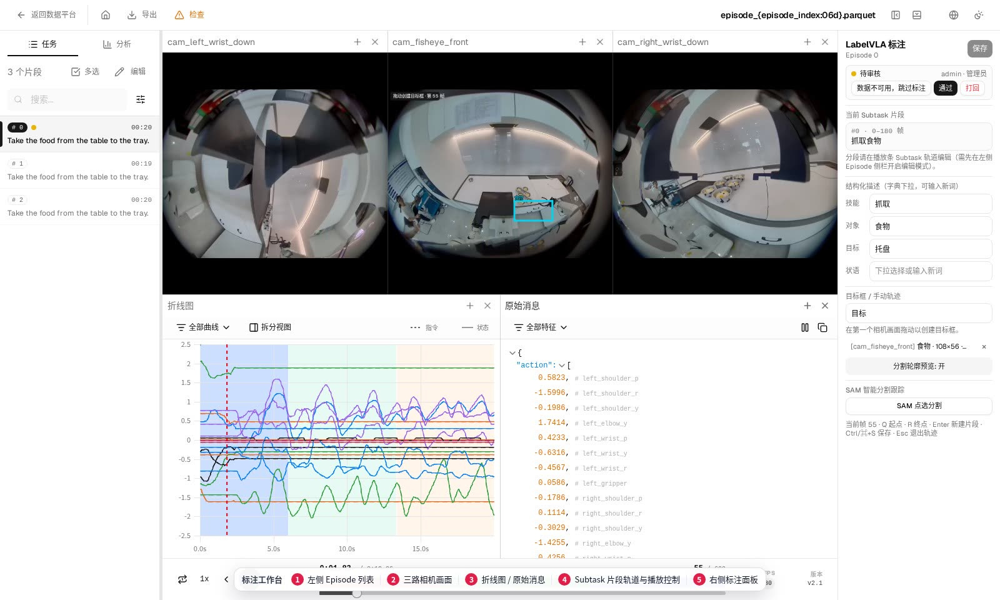
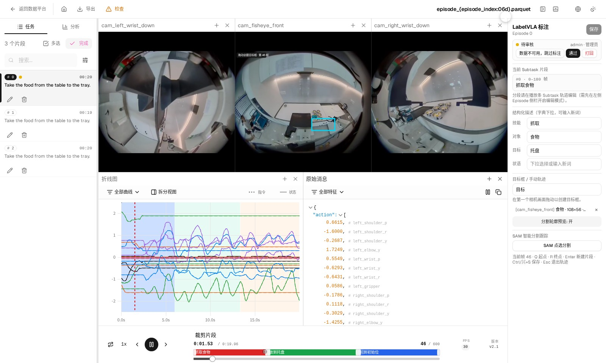

3. 标注工作台
点「进入工作区」后首次加载会创建任务副本，稍等几秒。进入后先点「开始标注」，再点左侧「编辑」，片段轨道才能编辑。
进入工作区
- 进入工作区在任务详情页「人工标注」节点点「进入工作区」。
- 开始标注右上角点「开始标注」，Episode 状态变成「标注中」。只有标注员或管理员能编辑。
- 开启编辑左侧栏点「编辑」，下方出现可编辑的片段轨道。
界面分区

| 区域 | 用途 |
|---|---|
| Episode 列表 | 切换数据、搜索、开启编辑，也可逐条标记通过 |
| 相机画面 | 多路视频同帧显示，可增删相机列 |
| 曲线 / 原始数据 | 关节曲线和逐帧原始值，帮助判断动作边界 |
| 时间轴 | 播放、逐帧、倍速、裁剪；下方是片段轨道 |
| 标注面板 | 片段、结构化描述、目标框、SAM 入口、保存与提交 |
划分动作片段
一条 Episode 通常包含抓取、移动、放置几个动作。把每个动作划成独立片段，后面的描述和目标框都挂在片段上。
- 点未标注区域在片段轨道的斜纹区点一下，弹出「子任务」对话框，填写名称，例如「抓取食物」「放到托盘」。
- 拖两端调边界鼠标移到片段边缘出现白色拖拽把手，左右拖动调整起止帧；剩余的未标注区域会补成新的斜纹段，继续点它给下一段命名。
- 可以反复调整片段可以多次拖拽，直到起止帧和视频里的动作对得上。
注意：界面底部提示的 Q 起点、R 终点、Enter 新建片段快捷键在当前版本没有生效，请用鼠标点轨道和拖拽边界来划分。
写描述与画目标框
- 选中片段点一下轨道上的片段，右侧面板显示「当前 Subtask 片段」。
- 填结构化描述技能 / 对象 / 目标 / 状语四个下拉框，既可选择也可直接输入新词后回车，会自动拼成描述句。
- 画目标框在任一相机画面按住拖动即可画框。一个片段可以画多个框。

建议：只标关键物体（例如被拿取的那一个碗），比把所有物体都标上省时间，程序质检也更容易通过。